写在前面的话
严格来说这是一篇译文，但与一般的翻译有所不同，我会修正原文中一些小错误，也会指出没有提及的一些坑，还会基于原文的想法做一些扩展开发。所以，读的时候有些是原作者的话，有些是我的添油加醋，但整体绝对保证流畅。另，基于原文改动较多，也就懒得一一标注出来，或许显得有些不负责，但是…
好了，下面开始进入正题：
之前的困惑
使用Javascript来构建移动应用已经不是什么新鲜事了。Ionic和Phonegap已经做了大量的探索，建立了各自的开发生态圈，吸引了相当多的开发者，不得不说都获得了一定程度的成功。
但是，尝试做了一些小Demo后，这些框架变得毫无吸引力，主要原因应该是很难做到原生体验。后来，转念一想，为啥不使用Swift/Objective-C或者Java构建原生app呢，诚然，这对于从前端开发转向app开发，需要学习的挺多，但这不正是一名现代Web开发者所擅长的吗：快速学习。那么，从哪儿开头呢？在Google过程中遇到了一篇文章：An iOS Developer on React Native，其中一句话打动了我：
Fast-forward a couple of months, and I’m confident enough to say I may never write an iOS app in Objective-C or Swift again.（快进几个月，我有足够的信心说：再也不会用Objective-C或者Swift来写iOS app了！）
一切的遇见都不是偶然的。看来，官方语言也有不少坑，那为啥不选择React Native呢，更何况自己是前端工（Ban）程（Zhuan）师（De）。好吧，我承认绕了个不必要的圈子，但走一些弯路能看到更多的风景，不是吗？
好的，下面先了解下需求。（难道不应该是先说一下React Native么 (╯‵□′)╯︵┻━┻）
先谈谈需求
很不幸，我从未在苹果商店找到过一个设置手机壁纸的完美APP。在Mac上，Unsplash承包了我的所有这方面的需求，很完美，然而在手机上…对不起，打开Setting，找到Wallpaper…。
为何不试着做一个满足自己需求的APP呢？下面是我目前希望有的功能点：
- 随机展示适合当做手机壁纸的图片
- 可以滑动浏览
- 可以保存到相册
- 保存前可以预览设置后的效果
虽然最后一项不知道能否做到，但至少可以开始撸其它功能点了。额，等等，开始之前，我觉得有必要提醒一下你应该知道的事情：
- Javascript
- 一些
ES6的特性：类，箭头函数,解构和模板字符串 - Mac OS X 终端 （好吧，你应该有个Mac或者Macbook）
- CSS：flexbox (这里有个非常棒的flexbox游戏教程)
- React：React的一些基本概念需要知道，比如
JSX、state和prop的区别、Virtual DOM。
再谈谈文章的规划
由于涉及的知识点较多，构建我的第一个iOS app将分为两篇来完成。每一篇有五个章节，每个章节会推进一步，直至完成预期。文章略长，一旦开始，最好以章节为单位来进行。建议先收藏，回家坐在电脑前慢慢品。
1. First Blood:建一个空React Native项目
首先确认已安装：
然后，在终端输入：npm install -g react-native-cli，全局安装React Native。
如果你觉得我说的不够详细，请移步React Native的官方安装文档
在你电脑找块风水宝地，用于初始化项目目录。在该文件夹下执行命令：react-native init PIW。
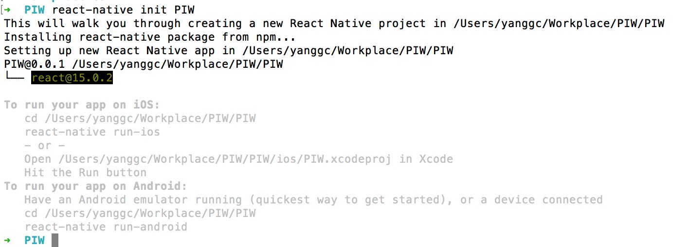
（PIW是Pick Image as Wallpaper的缩写，不要在意这个细节，我为了装X起的。另，鉴于网络因素，等待时间应该较长，此时可以去小个便，或者逗逗你的宠物。）
init后的项目目录：
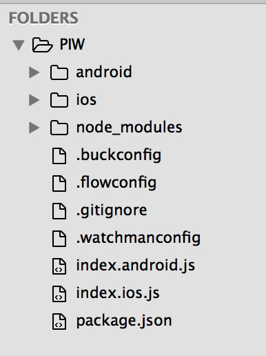
很显然，index.android.js和index.ios.js分别是安卓和苹果应用的入口执行文件，由于我们构建的是iOS APP，所以接下来只跟index.ios.js打交道。接下来，移步ios文件夹，并双击打开PIW.xcodeproj。（Xcode的工程文件）
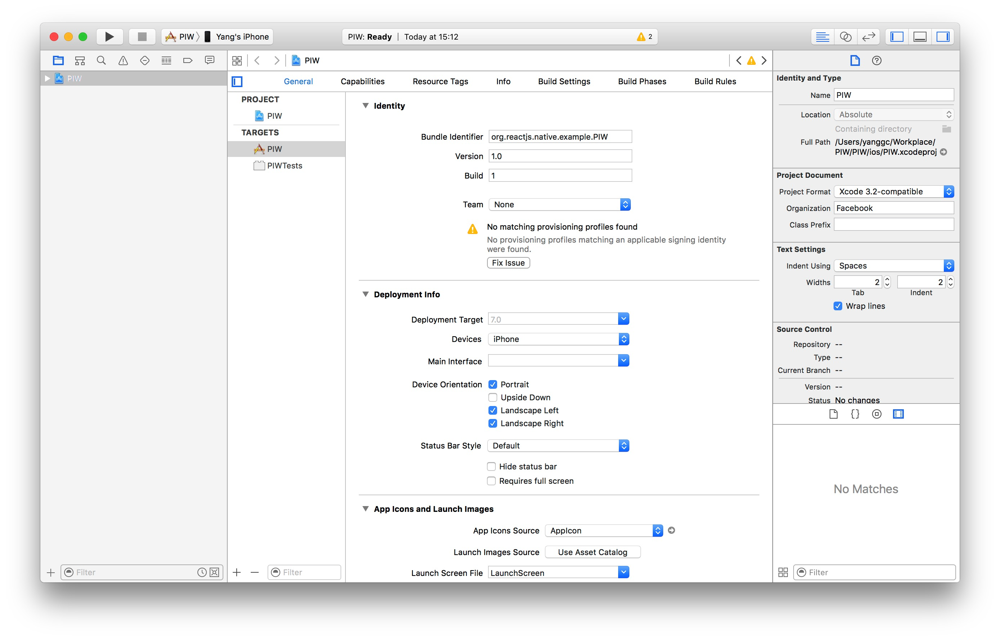
注意有个警告：No matching provisioning profiles found.。得想办法修复它。先改个名字，Bundle Identifier：com.zerosoul.me.tutorial.PIW怎么样？有木有感觉很高大上！只要遵循Reverse DNS Convention，请随意。然后选择Team，没有则按照指示新建一个。最后，点击Fix Issue。
Deployment Info一栏需要改动些默认设置，让app不能横屏，并且隐藏顶部的状态栏，下图红框已标出：
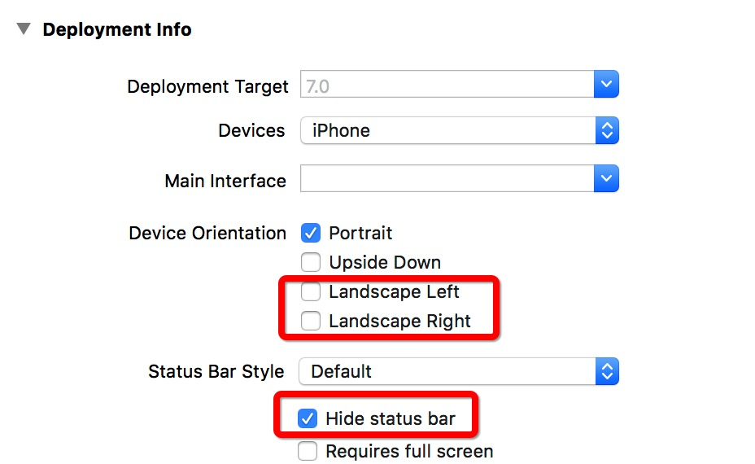
好了，可以点击左上角的Run，看一看模拟器的效果了。中途应该会蹦出一个终端弹窗，不要慌，正常现象。
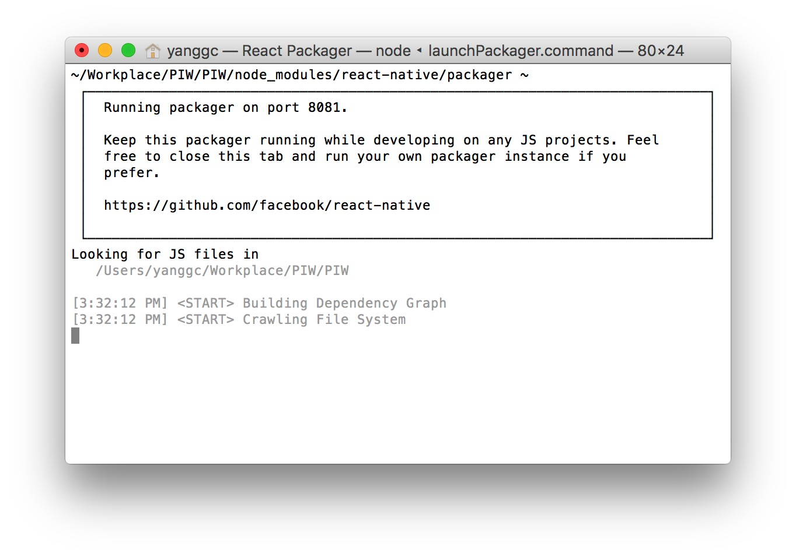
一旦Xcode构建完，在模拟器里你会看到这一幕：
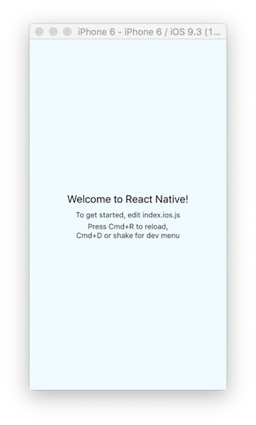
注：此处有坑，如果你用真机模拟，会出现这么一幕：
大红的懵逼！不过别慌，官方文档有对应的解决方法，移步这里可以找到解决方式。
2. 从第三方获取壁纸数据
既然要做壁纸APP，大量适合做手机壁纸的图片从哪里来？还记得前面提到的Unsplash吗？一切的遇见都不是偶然，好心的歪果仁做了一个Unsplash图片调用接口，用于生成一些精美占位图，非常方便！
有关ES6中“类”的解释
你可能会注意到，有些React代码会出现var PIW = React.createClass({ ... })，有些会是class PIW extends Component{ ... }。呵呵，这是个历史遗留问题，用哪种风格是个人选择问题，不存在孰优孰劣，有选择恐惧症的同学可以看看这篇文章。
此处，我选择Recat.Component风格，别问我为什么，就这么任性！
开始做一些改动
在PIW类里面，第一件事情便是加个构造函数constructor，在此初始化两个State：wallsJSON和isLoading。wallsJSON用于存储从第三方接口获取的json数组数据，isLoading是个布尔变量，用于标识数据是否加载完毕。
1 | class PIW extends Component{ |
注：方便起见，涉及的代码改动，我用`/*/隔离标识出，下同。** 既然有存放数据的变量了，就得有给之赋值的函数，好吧，在constructor下面加一个占位函数fetchWallsJSON`:
1 | fetchWallsJSON() { |
从业务逻辑来讲，组件一旦加载完毕，就应该触发该函数。那么，该componentDidMount上场了，它是React Native组件的生命周期函数之一，在首次渲染（render）成功后会触发。想要更系统地理解组件的生命周期，请移步这里。注意，既然我们用的ES6的类语法，就可以省略getInitialState了，取而代之的是在constructor中给this.state赋值。
1 | componentDidMount() { |
fetchWallsJSON里会打印信息，我们应该从哪儿看到呢？首先，让模拟器获取焦点，使用CMD + D组合键调出调试菜单，选择Debug in Chrome，好吧，顺便把Enable live reload也打开吧，妈妈再也不用担心每次都要手动重启APP了。将会在Chrome里打开一个新标签，按照上面的说明调出console的界面。啊哈！
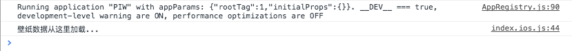
坑占好了，下面，可以开始考虑引入真实数据了。访问URL：unsplash.it/list ，你将会看到铺满全屏的数据，接下来我们就基于这些数据做文章啦~~~
首先，替换掉console:
1 | fetchWallsJSON() { |
注：用到了fetch函数，不熟悉的同学请参考这里
保存然后刷新，几秒过后，啊哈！
太好了，我们已经能从第三方拿到数据了！在打印出数据前会有点延迟，这很正常，因为从请求到响应回数据会有个等待时间，此处应有加载提示。
3. 增加加载提示
首先，把PIW类里render代码全部删除，新增以下代码：
1 | render() { |
里面新增了两个函数，我们来实现它：
1 | renderLoadingScreen() { |
根据isLoading的不同状态，渲染不同的界面。但是请注意，我们好像忘了什么。啊哈，isLoading并没有改变状态，应该在哪儿将其状态变过来呢？fetchWallsJSON！
1 | ... |
有关setState的详细说明请移步这里，一句话描述其作用就是用于触发UI更新。
另外，我们在renderLoadingScreen调用了一个新组件ActivityIndicatorIOS，因此，需要在头部引入之：
1 | import { |
在看到最终效果前，还有一件事情：注意到<View>标签内有个styles.loadingContainer没有？没错，这是用来定义View的样式的，目前可以这样理解：React内的样式全部用行内样式来定义的。而样式则通过var styles = StyleSheet.create({…来创建，只需要在相应的组件里加以引用即可：
创建loadingContainer:
1 | var styles = StyleSheet.create({ |
引用loadingContainer:
1 | <View style={styles.loadingContainer}/> |
当然，也可以这样使用：
1 | <View style={{ |
不过这样做代码的可读性和可维护性较差，尤其在有很多组件的时候，容易乱套，所以并不是一个好的实践。另外，注意到没，React Native严重依赖flexbox布局元素，所以，学好flexbox这个知识点就很有必要。
保存这些改动，你将会在模拟器中看到以下加载页面：
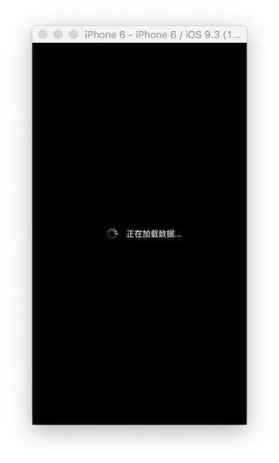
过个几秒钟，将会转为：
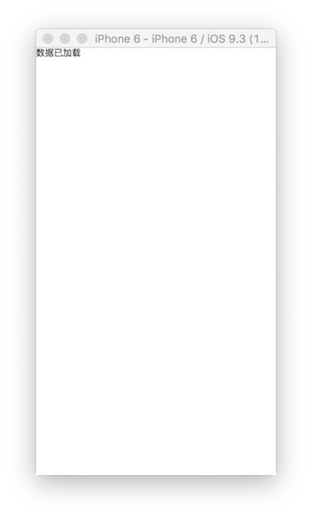
4. 筛选出随机的壁纸
这一章节侧重于Javascript的编码，将创建一个专门的模块用于生成随机数。如果模块的概念感到陌生，请先移步Node.js的模块文档。
首先，我们在index.ios.js的class声明前定义一个常量，用于决定要随机选取的壁纸数量。
1 | const NUM_WALLPAPERS = 5; |
然后创建一个用户生成随机数的模块，这个模块内有两个函数：
uniqueRandomNumbers：该函数有三个参数，第一个决定了将要返回的随机数数量，后面两个定义随机数选取的范围。比如调用uniqueRandomNumbers(5,10,20)将获得包含5个随机数的数组，他们的范围在10到20之间。randomNumberInRange：该函数有两个参数，定义了随机数范围，并返回一个随机数。比如调用randomNumberInRange(2,10)将返回介于2到10的随机的一个数。
当然，我们完全可以将这两个函数合并为一个，但遵循单一职责原则应该是编码的最佳实践：一个函数只做一件事并将其做好。相信我，遵循好的编程原则能让以后的日子好过一些。
好了，思路表述完了，开始编码。首先，在根目录下新建一个js文件RandManager.js，以下是代码：
1 | module.exports = { |
在index.ios.js中引用RandManager模块：var RandManager = require('./RandManager.js');，然后我们就可以在fetchWallsJSON中调用啦：
1 | fetchWallsJSON() { |
上面代码应该不用过多解释了，使用uniqueRandomNumbers生成5个随机数作为jsonData的索引值，进而获取5个随机壁纸数据并存入wallsJSON，哦对了，别忘了更新isLoading。
有了随机数据，就可以在renderResults里使用了：
1 | renderResults() { |
以上代码有个地方值得注意：React Native通过循环数组或集合渲染子元素时，需要给每个元素制定一个唯一的key，这也是为啥<Text key={index}>这样写的原因。
保存代码，模拟器刷新后，我们看到了五个不同的id：
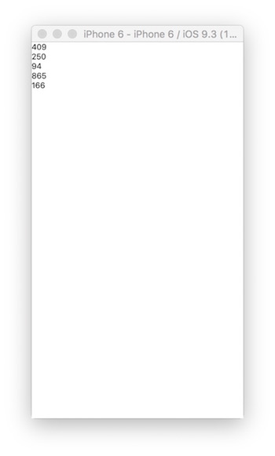
当然，可以将id改为author，这样，我们看到的是五个不同的名字：
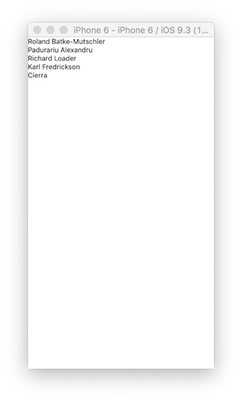
非常好，我们现在已经可以自如地操控数据了。
5. 新增Swiper组件
React Native有强大的社区支持和丰富的组件库。这一章节学习如何引入第三方组件。
对于我们当前的APP，需要一个可滑动浏览图片的组件，推荐react-native-swiper。
终端切换到项目根目录，运行命令：npm install react-native-swiper --save，然后require到代码里：var Swiper=require('react-native-swiper')。
将renderResults里的View替换为Swiper：
1 | renderResults() { |
不出意外的话，界面将变成下面这样：
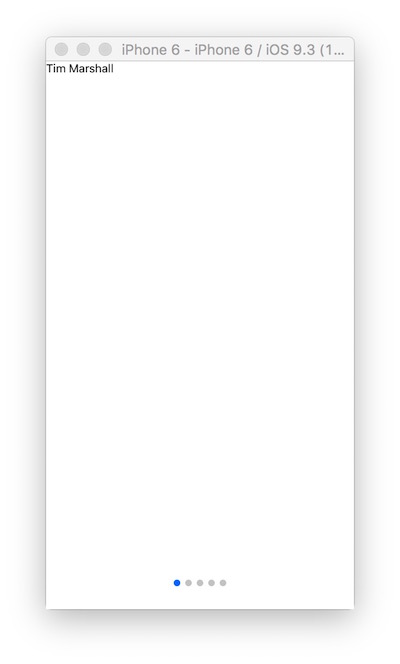
下面，根据Swiper组件的文档，我们来微调一下样式：
1 | <Swiper |
- 微调了下底部分页小圆点，更大更黑了（卧槽，我在说什么…）
- 禁用了循环，这样，一旦浏览到最后一页，然后就没有然后了。
- 新增了每一页滑动完毕后的触发事件：
onMomentumScrollEnd（这个会在下一篇文章中用到，此处先占个坑）
我们已经把Swiper加上了，好啦，这一节就写到这里，因为…我累了。
总结
写到这里，我发现文章已经挺长的了。那么…再加个总结吧，都这么长了，应该不介意再长一点吧。
- 第一节讲的是如何新建一个空的React Native项目
- 第二节讲的是如何从第三方API获取原始数据，并建议用ES6新语法来构建程序
- 第三节我们根据APP不同的状态渲染出不同的界面
- 第四节我们新建了一个模块，引入并解决了产生随机数的问题
- 第五节我们新增了一个第三方组件，并做了简单设置。
好吧，必须承认，目前为止，我们的APP看起来似乎没啥特殊之处。不过，刚入门嘛，一步一步走到这里，也不容易了。下一篇文章，我们将继续打磨这个APP，新增特性预告：
- 作者名字将替换为图片，没错，高清无码大图
- 自定义双击事件，保存图片到相册：
PanHandler - 通过Xcode新增类库并获取相应授权，比如访问相册
- 增加预览功能
- 创建更多的自定义组件
哦对了，最终代码在这儿。年轻人，我们下一回合见…
参考链接
The Beauty Of React Native: Building Your First iOS App With JavaScript (Part 1)